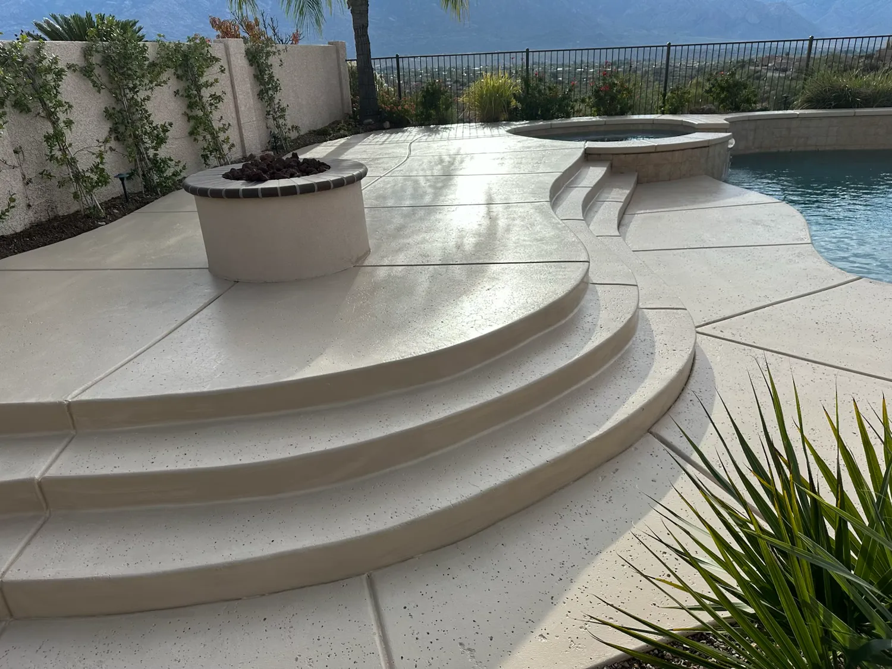
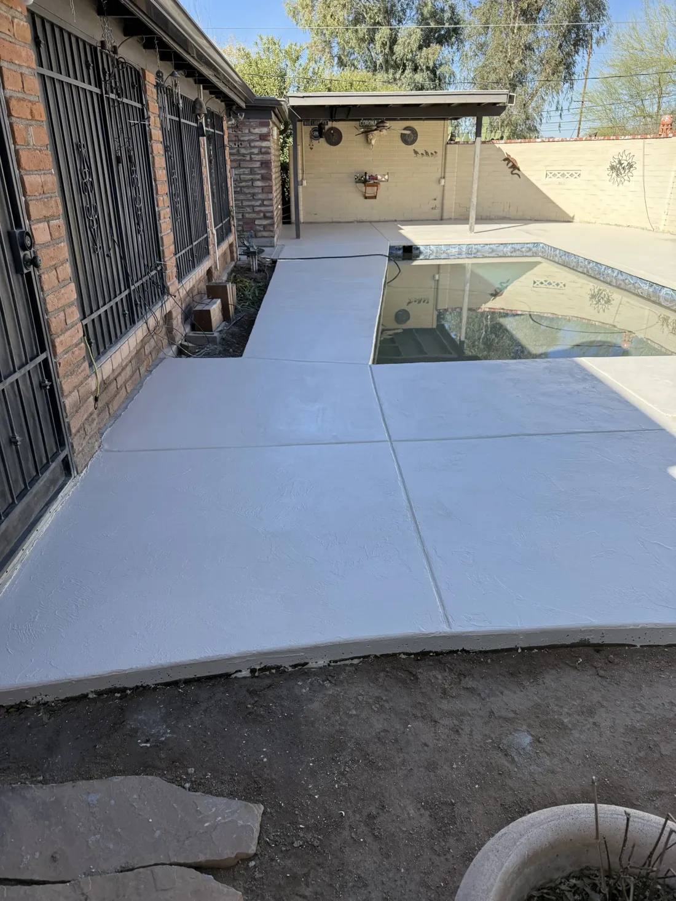
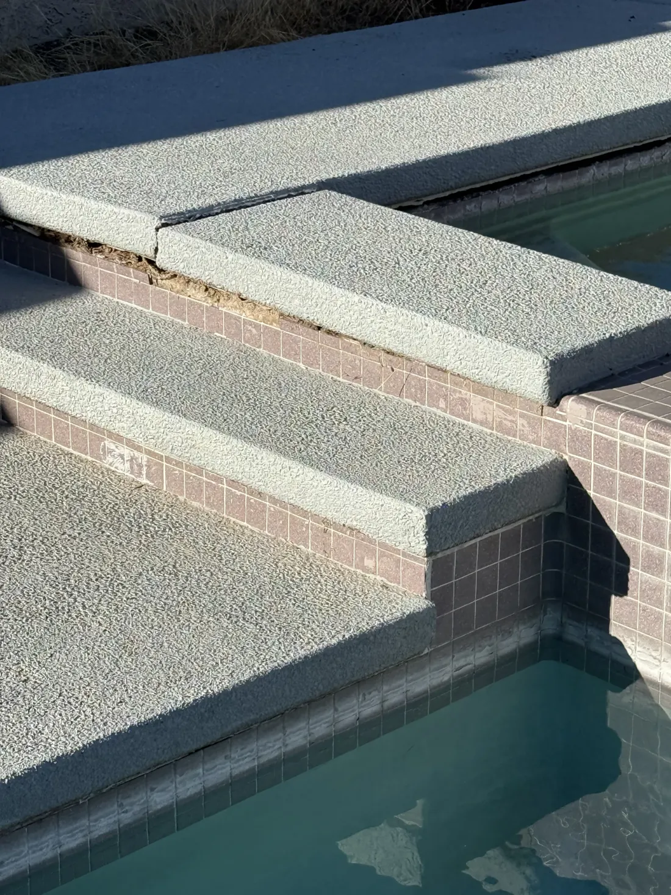
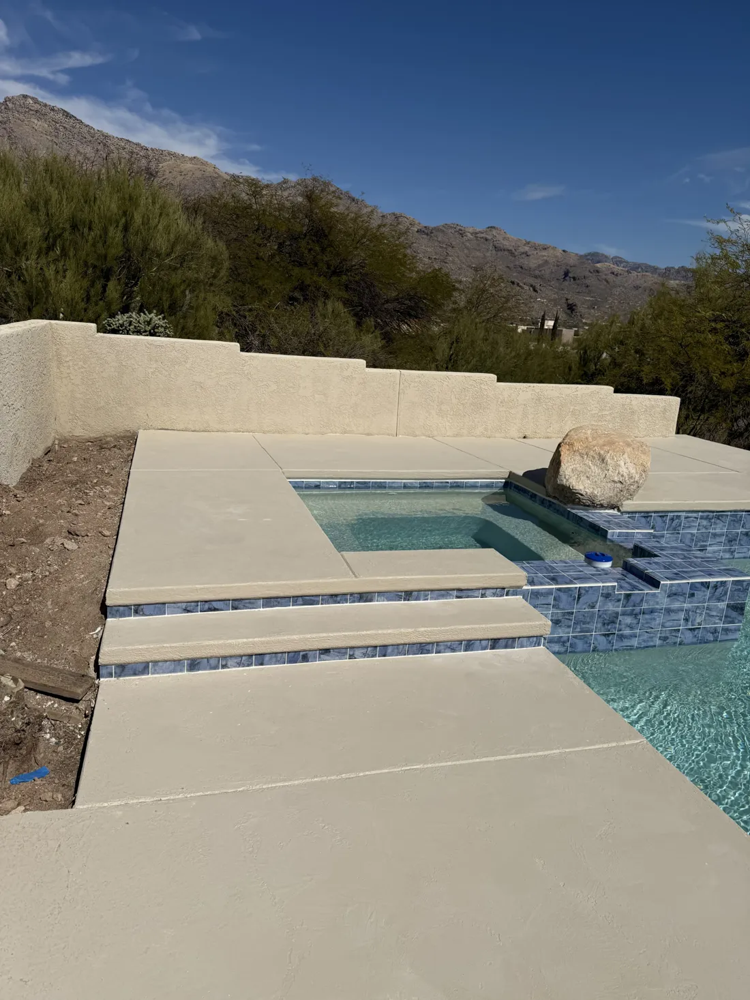
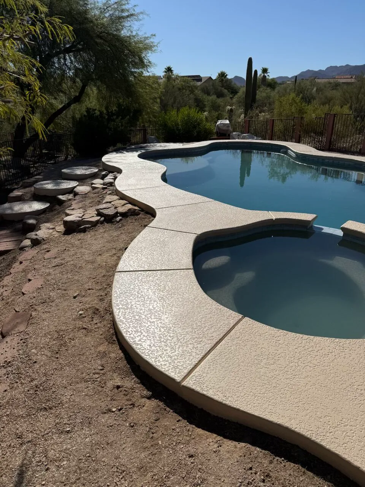

Pool deck remodeling in Tucson, AZ
A pool deck takes more abuse than any other slab on your property: full sun, bare feet, chlorine or salt, and a monsoon every summer. John's Concrete & Pool Decking restores pool decks across Tucson and Pima County with professional overlays and repairs that extend the life of the concrete you already have.

- Licensed, bonded and insured
- ROC #335226
- Free written estimates
- 5.0 stars from 5 reviews
What's included.
Most worn pool decks do not need to be torn out. If the slab underneath is sound, a good overlay fixes the cracks, the stains and the rough or slick surface in one job. The work that decides how long it lasts happens before any finish goes on: finding what is cracked and why, cleaning the surface, repairing it and making sure the new surface bonds. In Tucson, where a deck can be too hot to stand on by afternoon, the finish you pick matters as much as the repair.
- Pool deck overlays
- Crack repair
- Surface resurfacing
- Structural and cosmetic repairs
- Slip-resistant finishes
- Repair of discolored or worn decks
How we do it.
-
Look at the deck
We walk the deck, check the cracks and the surface, and tell you whether an overlay or a repair makes sense.
-
Repair and prepare
Cracks and damaged areas get fixed and the surface is cleaned so the new finish has something sound to grip.
-
Apply the new surface
The overlay or finish goes on with the texture and color you picked, with a slip-resistant surface around the water.
-
Walk it with you
We check the finished deck with you, clean up and tell you how to care for it.
Signs your pool deck needs work.
If any of these sound familiar, the sooner someone looks at it the cheaper it usually is to fix.
- Cracks that run across the deck or lift at the edge of the pool
- Surface that is flaking, rough or worn smooth
- Stains or fading that cleaning does not fix
- A deck that feels slick when wet or too hot to walk on barefoot
Recent work.




Pool decks questions.
Do I have to replace my pool deck?
Often not. If the concrete under the surface is solid, an overlay and crack repair can renew it for much less than tearing it out. We tell you what we see before you decide.
Why do pool decks crack in Tucson?
Heat swings, desert soils that move when they get wet, and slabs poured without enough joints all play a part. Cracks that keep growing usually point to something under the slab, which is why we look before we cover anything.
Will an overlay make the deck slippery?
It should not. Slip-resistant finishes are part of what we offer, and the texture is chosen for a surface that stays wet and gets walked on barefoot.
How long will I be without my pool deck?
It depends on the size of the deck and the repairs needed. We give you a schedule with the estimate.
Ready to bring your pool deck back?
Call us, or send the details and we will call you to set up a free estimate.